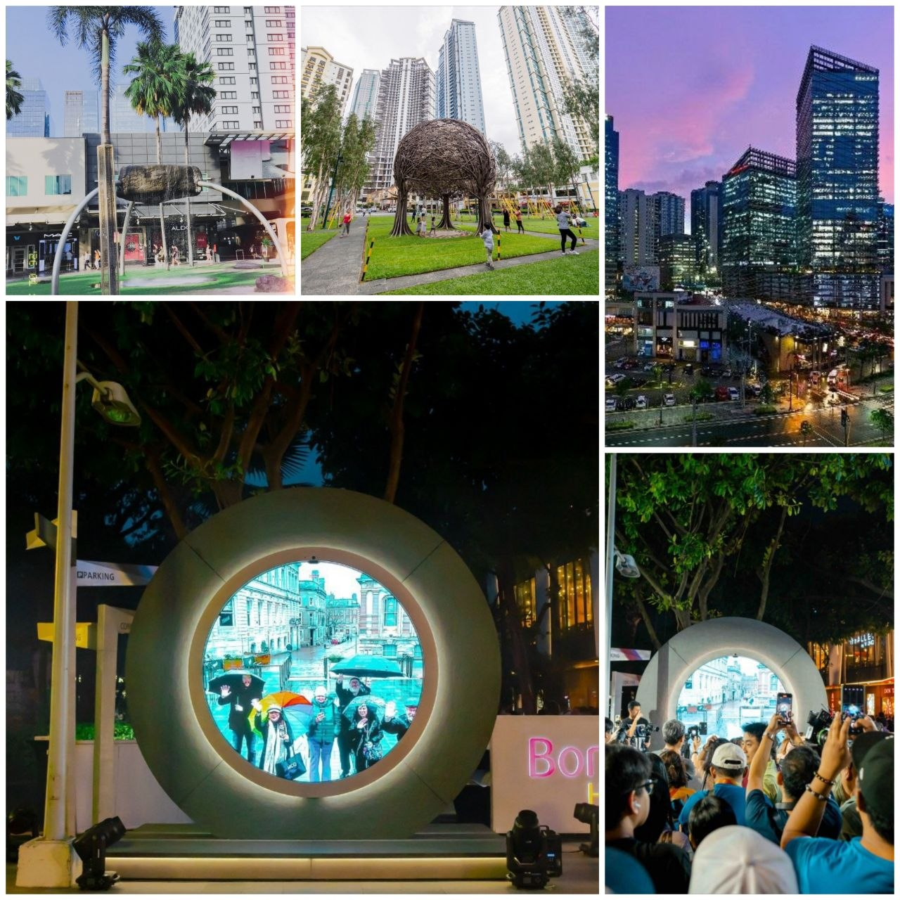
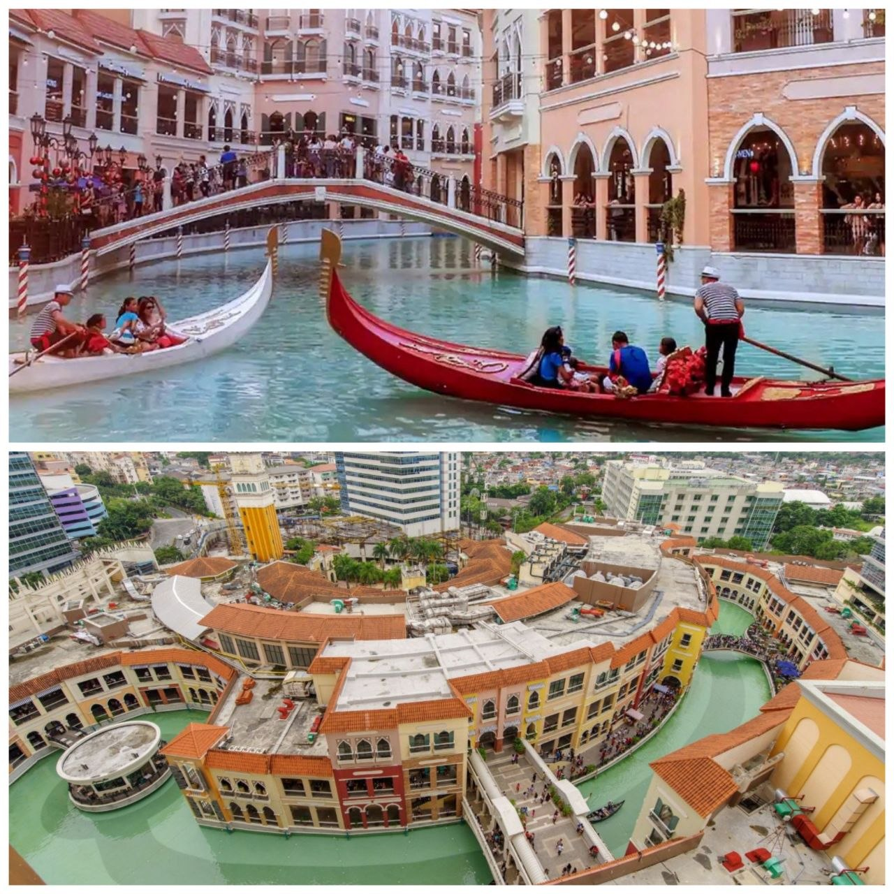

Bonifacio Global City (BGC)
Taguig — The center of Probinsyudad
It is famous for being a ultra-modern, clean, and pedestrian-friendly financial and lifestyle district

Two Wheels. Zero Grip. Pure Adrenaline.
Motorcycle enthusiast and visual storyteller

Taguig — The center of Probinsyudad
It is famous for being a ultra-modern, clean, and pedestrian-friendly financial and lifestyle district

Taguig — Replicas of Venetian
It is famous for its romantic,Italy-inspired shopping mall setting featuring a man-made canal, authentic gondola rides with singing gondoliers

San Juan, Batangas — South Long Rides
It haslight-colored sandy shores formed from weathered crushed shells, crystal-clear azure waters.